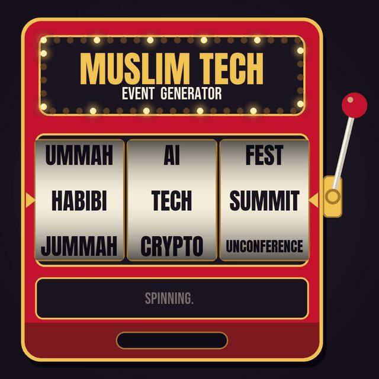

Some of the best Simply Smashed R&D still happens in my mum's back garden. Family BBQ a few weeks ago (rip summer, feels like it ended the second we packed the grill away) and half of it quietly turned into a taste test. New patties on the grill, a couple of sauces we've been messing with, everyone chewing and giving their verdict whether you asked for it or not. One of them was the New Yorker, a pastrami smash we'd been arguing over for weeks. It's been selling out on repeat since. This is genuinely how a lot of it still works. Not a lab, not a focus group. A grill in the garden and a family that'll tell you straight when something's rubbish. What's the best thing you've ever had off a family BBQ?
Sakib Ahmed
Updated
I was born in Dieppe, France, and moved to east London when I was eight. At eighteen Goldman Sachs took me on as an apprentice engineer, first cohort, and put me on the wrong team. I stayed five years.
These days I’m building Draper with Mustafa and Aaquib, and we run LinkedIn for founders and their teams. Mustafa and I met at an agency, where we spent two years working with YC founders and a16z-backed companies before we left to do our own version of it. Content is product and product is content. I’ve said it maybe 200 times now.
Before Draper I built Simply Smashed with my brother, out of the back of a flower shop. It became London’s highest rated burger joint on Google, 4.9 stars across 3,000 reviews, and we never spent a pound on paid marketing. He runs it now and runs it better, which I get told regularly.
At Goldman I talked my way onto someone else’s side project, MiniDeed, a social app where every like was a penny to charity. It raised £26k across 25 countries and still takes donations daily.
On the side I build small apps for Muslims. Bilal, an athan that tells you when to leave for jama’ah at your masjid, launched on 11 September for your phone, your Mac and the TV in your kitchen. There’s also dhikry, which is invite only, vibenasheeds, and a slot machine for naming Muslim tech events.
Menu
Mains
Sides
Lately
My parents landed in Dhaka and the whole neighbourhood called the police on them. Here is what my mother did next: They flew out in the middle of March 2020, just as Bangladesh closed its borders to Europe. Anyone arriving from the UK had to quarantine for fourteen days. A short trip turned into nearly seven weeks. My parents did the fourteen days exactly as told. Their neighbours did not believe them. They rang the police again and again to report that my parents had been seen outside. They had not been outside once. I was in London, twenty-one, doing what my generation does when it feels powerless. I tweeted about it. I tagged our MP, whose helpline for stranded nationals went to a mailbox nobody read. Low-risk travellers were being flown out of Sylhet. My father, who was high risk, was told nothing at all. None of it moved a single flight. Then my mother rang with a story about a rickshaw puller. Someone had asked whether he was frightened of the virus. He said the only thing he feared was an empty stomach for his family. Ramadan came at the end of April. My parents were still stranded, still being reported by their own neighbours. They spent it making food packs with whatever family was nearby and getting them out across the city. Think about that for a moment. They were the most vulnerable people on that street. And their answer to being treated as a threat was to go and feed people. We have become very good at the visible response, the kind where you post about something and tag a politician. It feels like action and it feeds nobody. They had no platform, so they served the person in front of them. The Prophet (peace be upon Him) said the best of people are those most beneficial to people. My parents landed back in London on the 3rd of May. My father came through arrivals in full PPE. It was my twenty-second birthday. Neither of them has mentioned those food packs since. If your parents are still with you, ask them what they did in the year nobody was watching.
Just landed in antalya... First meal was a kebab shop at 2am. We rocked up right as they were closing, pleaded a bit, and they let us eat in while they shut up around us. Then on their way out, the staff cut up all the leftover kebab and laid it out on the pavement for the stray cats. Nobody was watching. They just did it. Oh, and the kebab was unreal. That first meal after you land always hits different.
I want every writer we hire to leave eventually. If they don't, I've probably hired the wrong person. Most companies treat ambition like a flight risk. They screen for loyalty and act betrayed when someone good moves on. I think that's backwards. I left Goldman Sachs to go and sell burgers. I'm not going to hire people and then ask them to stop wanting the same thing. At Draper we look for people who want to build something of their own one day. People building towards something treat a client's problems like practice for their own. They move faster. They care more. So while they're here, they get the real thing. They run the founder call themselves and get paid for every client they take on. If someone learns everything here and leaves to start a company, that's the plan working. You can train skill. You can't teach hunger. P.S. We're hiring content strategists who want to build something of their own one day. Full role in the comments.
IM HIRING FOR DRAPER! we've done 400m+ views for 100+ founders and driven over $20m+ in pipeline from our content, yc and a16z backed companies and vc funds you'd be working directly with those founders every week and running their content yourself you'll learn stuff you wont
i love seeing more tech events put out for muslims! but we seriously need to have a discussion on how these events are named
